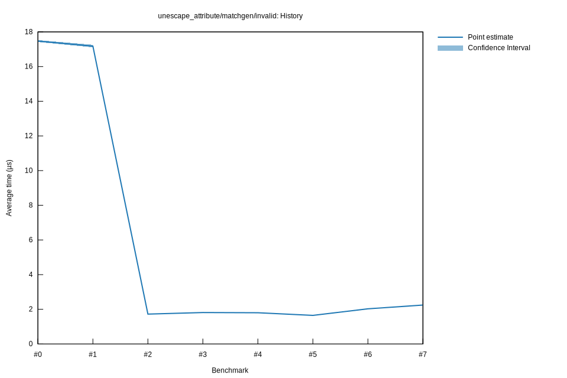

# 62025-10-31T17:58:01-07:00
|
Lower Bound |
Estimate |
Upper Bound |
| Value: |
2.02µs |
2.03µs |
2.04µs |
| Throughput: |
7978.60MiB/s |
7942.83MiB/s |
7904.16MiB/s |
| Change in Value: |
+22.155% |
+23.505% |
+24.950% |
| Change in Throughput: |
-18.136% |
-19.031% |
-19.968% |
No change in performance detected.
# 52025-10-31T17:51:23-07:00
|
Lower Bound |
Estimate |
Upper Bound |
| Value: |
1.64µs |
1.65µs |
1.66µs |
| Throughput: |
9804.22MiB/s |
9770.00MiB/s |
9733.04MiB/s |
| Change in Value: |
-9.7970% |
-9.0116% |
-8.2392% |
| Change in Throughput: |
+10.861% |
+9.9041% |
+8.9790% |
No change in performance detected.
# 42025-10-29T22:30:11-07:00
|
Lower Bound |
Estimate |
Upper Bound |
| Value: |
1.79µs |
1.80µs |
1.81µs |
| Throughput: |
8978.76MiB/s |
8945.33MiB/s |
8911.25MiB/s |
| Change in Value: |
-0.7838% |
-0.0837% |
+0.6243% |
| Change in Throughput: |
+0.7900% |
+0.0837% |
-0.6205% |
Change within noise threshold.
# 32025-10-29T22:23:37-07:00
|
Lower Bound |
Estimate |
Upper Bound |
| Value: |
1.80µs |
1.81µs |
1.83µs |
| Throughput: |
8937.71MiB/s |
8884.12MiB/s |
8826.41MiB/s |
| Change in Value: |
+3.9565% |
+4.7857% |
+5.6280% |
| Change in Throughput: |
-3.8059% |
-4.5672% |
-5.3282% |
No change in performance detected.
# 22025-10-29T19:48:00-07:00
|
Lower Bound |
Estimate |
Upper Bound |
| Value: |
1.72µs |
1.72µs |
1.73µs |
| Throughput: |
9387.73MiB/s |
9350.47MiB/s |
9311.35MiB/s |
| Change in Value: |
-90.049% |
-89.951% |
-89.860% |
| Change in Throughput: |
+904.96% |
+895.09% |
+886.21% |
No change in performance detected.
# 12025-10-29T19:04:52-07:00
|
Lower Bound |
Estimate |
Upper Bound |
| Value: |
17.11µs |
17.18µs |
17.26µs |
| Throughput: |
941.88MiB/s |
938.01MiB/s |
933.60MiB/s |
| Change in Value: |
-2.5364% |
-1.5300% |
-0.5115% |
| Change in Throughput: |
+2.6024% |
+1.5538% |
+0.5142% |
No change in performance detected.
# 02025-10-26T16:49:04-07:00
|
Lower Bound |
Estimate |
Upper Bound |
| Value: |
17.42µs |
17.47µs |
17.53µs |
| Throughput: |
925.11MiB/s |
922.28MiB/s |
919.28MiB/s |